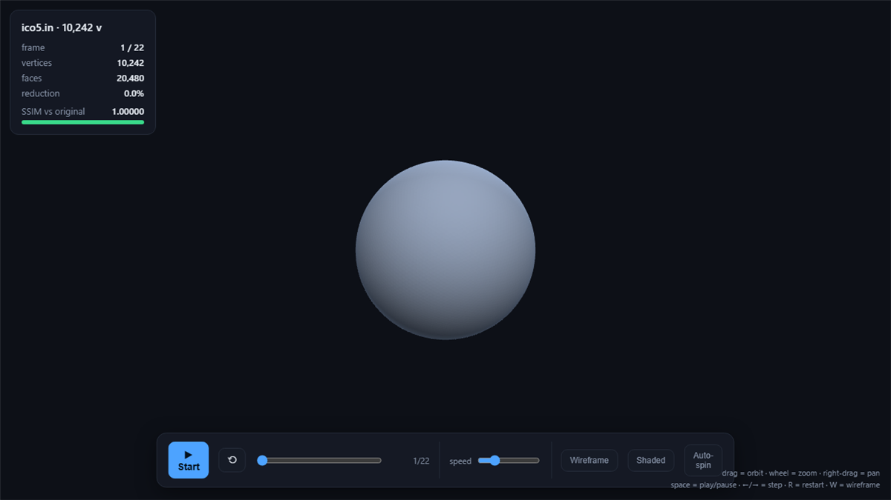
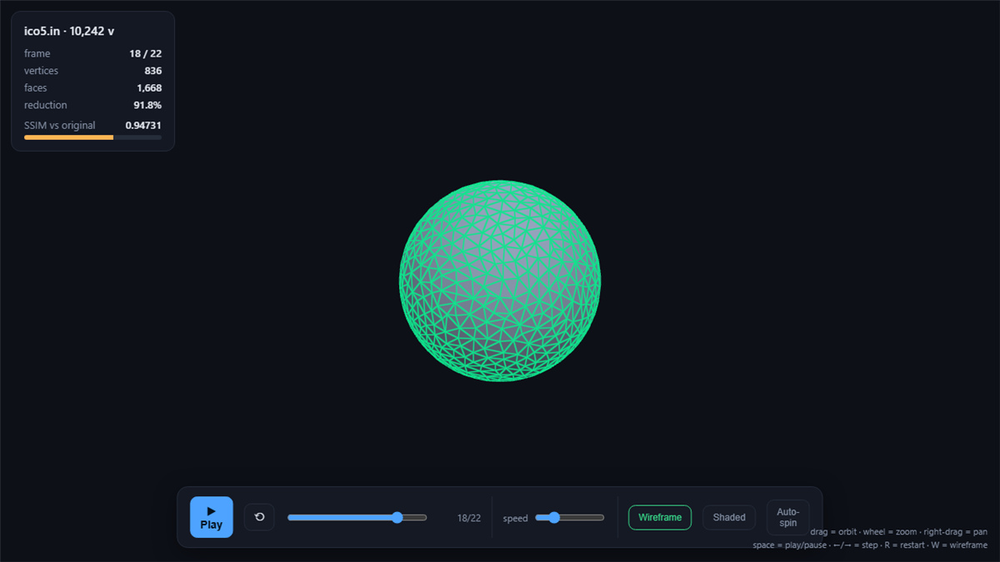

Perception-Aware 3D Mesh Simplification
A from-scratch C++ solver for Huawei’s 2nd IMC Challenge: simplify large 3D meshes while preserving how they look to a viewer.

Overview
The challenge: reduce a mesh’s triangle count as far as possible while keeping it visually faithful, scored by a hidden judge combining structural similarity and geometric error. With no access to the judge, the hard part is being able to predict your own score before submitting.
What I built
A quadric error metric (QEM) edge-collapse simplifier driven by a best-first priority queue, so the cheapest-error collapses happen first. To self-score against the hidden judge I implemented my own software renderer, plus from-scratch SSIM and Hausdorff-distance metrics, then used identity probes to reverse-engineer how the scorer weighted them. The pipeline is size-adaptive (separate small/large paths) and includes visibility / screen-coverage weighting and crease constraints so silhouettes survive aggressive decimation.
Highlights
- Compressed closed-manifold meshes up to 1.1M vertices.
- Judge score of 87.49 with all 7 test cases accepted.
- Backed by a C++ unit-test suite; OBJ visualizers and amalgamation/submit tooling around the core.

